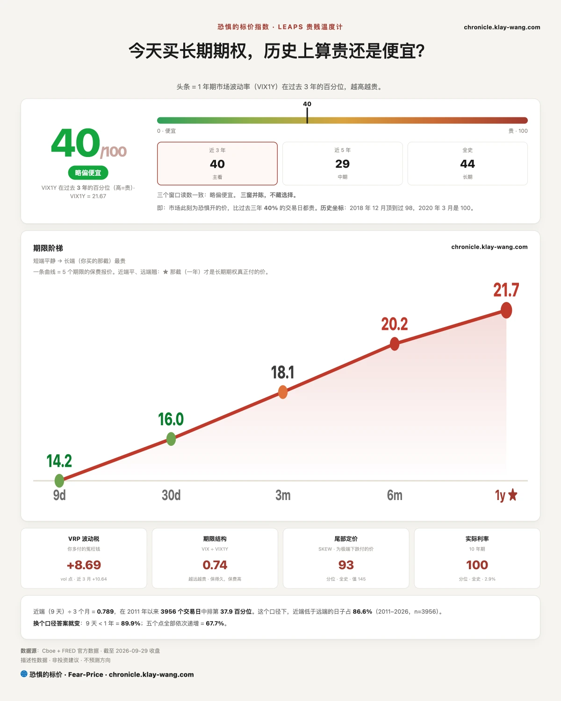
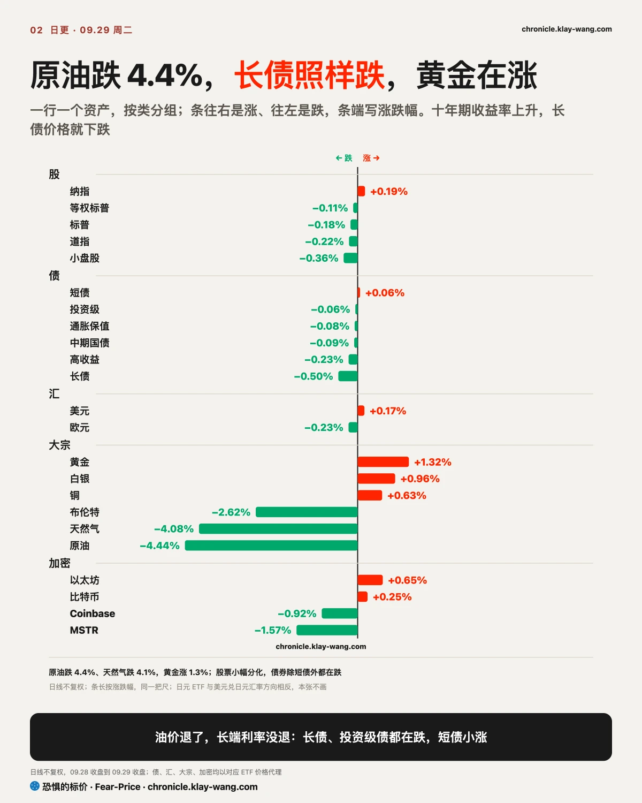
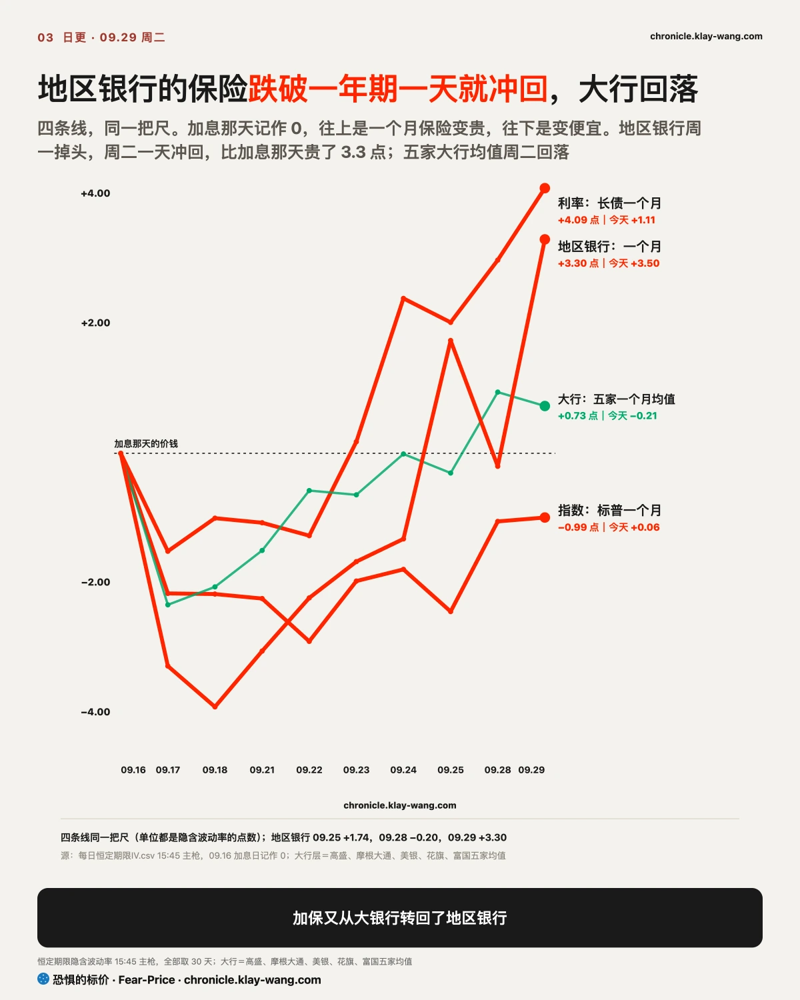
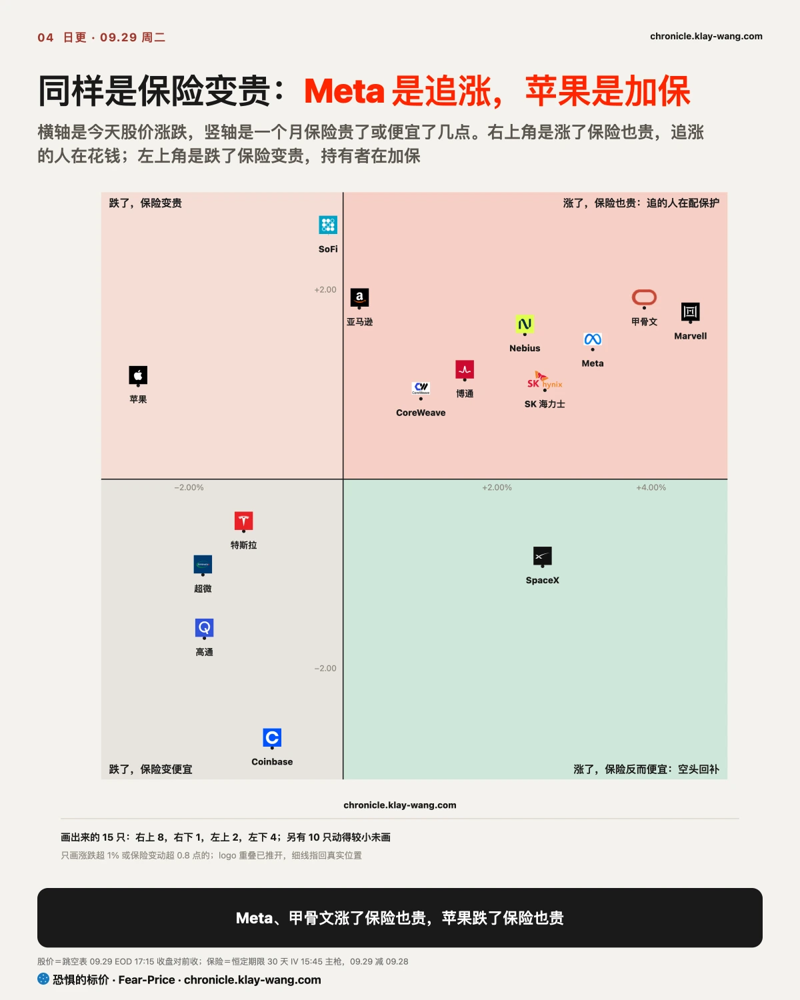
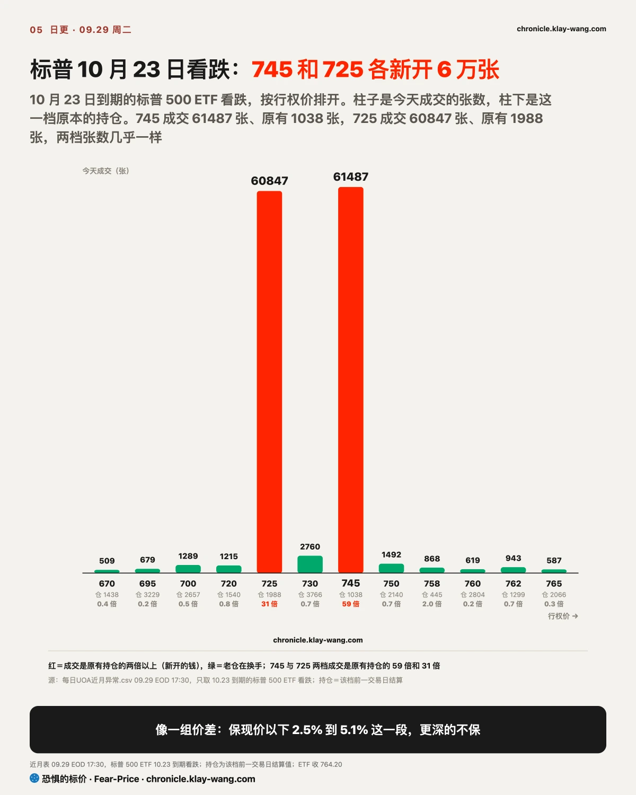

恐惧的标价指数（Fear-Price Index）· 2026-09-29 · 读数 40.3/100：一年期波动率 VIX1Y 为 21.67，处于近三年第 40.3 百分位，高即贵。逐日台账与口径 → chronicle.klay-wang.com · 转载注明：恐惧的标价指数 · Fear-Price
恐惧的标价量的是给美股买一年保险要花多少钱，放进过去三年打分，满分 100，分越高越贵。周二它从 40.2 分到 40.3 分，一个月期的 VIX 从 16.07 到 16.04，也几乎没动。消费者信心跌到 2014 年以来最低、十年期利率再创新高，给股票组合买保护的价钱和周一一样。对你来说，现在配一年期保护和上周差不多，市场还没把利率这件事算进明年的风险里。
K 指数 1.972，低于周一定稿的 2.139。越接近 1，说明越多人把担忧落实到买保护上。恐贪读数从 34.4 降到 31.6，VIX 基本不变，嘴上更悲观了，掏钱买保护的人没有变多。按今天的恐贪读数，K 要跌破 1，VIX 需要升到 31.6 以上。历史在 chronicle.klay-wang.com/kindex，指数在 chronicle.klay-wang.com/fear-price。


美国十年期国债收益率周二升到 5.26%，比周一高 2 个基点，追平 2007 年 6 月以来的最高；三十年期升到 5.59%，2004 年 5 月以来最高。这一天本该让利率降温：原油基金跌 4.4%，海湾原油出口恢复，美国能源部还计划再放出最多 4000 万桶储备油；9 月消费者信心从 88.6 降到 81.9，2014 年以来最低，8 月职位空缺降到 3 月以来最少。
短端听进去了：两年期收在 4.89%，比周一低 3 个基点。两年期最贴着美联储走，它回落，说明市场把再加息的押注收了一点。长端没听。借出十年、三十年的钱，债主要多收一截补偿，债市担心的是美国财政赤字太大、国债越发越多；加息押注松了，长端照样涨。
这层担心还没传到公司身上。这一周，给长债基金买的一个月保险从 10.7 升到 16.1，贵了五成；公司债基金的一个月保险贵了六到七成，14 家 AI 相关发债公司比国债多付的利息，中位数却只从 57 个基点变到 60 个。债基波动变大，是被利率拖着走，市场没在给违约定价。对借钱的人，房贷利率跟着十年期走，油价降了也帮不上忙；对有闲钱的人，一年期国债能拿到约 4.6%，长债价格还在跌。
我的判断是，周二的利率上行来自长钱要求更多补偿，不来自加息预期。如果周五非农公布前两年期收益率回到 4.92% 以上、并且涨得比十年期多，推利率的又回到了加息预期，这个判断就站不住。

地区银行基金周二是放量下跌：开盘十来分钟就是全天最高，中午跌到最低，收盘停在全天区间四分之一的位置，成交比周一多两成，是有人在卖，不只是没人买。它的一个月保险从 25.95 升到 29.45，全表涨得最多，重新高过一年期的 28.69。
为什么先是它？利率曲线变陡，本来对借短贷长的银行是好事，存款成本不涨，贷款收益在涨。市场没按这个算：地区银行手里一般压着不少长债，长端每涨一截，那批债的账面亏损就多一截，2023 年硅谷银行出事就在这一步。五家大银行的一个月保险均值反而降了 0.22 点，周一转到大银行的加保又转回了地区银行；金融板块十月到期、约定价 54 和 56 的押跌期权各成交 3 万多张，板块页在 chronicle.klay-wang.com/t/XLF。
9 月 25 日写过，这轮利率冲击最先落在地区银行，10 月 2 日开奖。周一它的保险刚跌到一年期之下，周二就翻了回来，又站回判断这边。另一条是 9 月 23 日写的，利率冲击还没传到信用，推翻条件之一是银行六家的一个月保险均值升到 31.98；周二它是 31.95，只差 0.03，周三收盘开奖。

同一个利率环境下，股票分成了两种盘面。有新故事的被买上去：OpenAI 周二美东下午 1 点多在开发者大会上发布常驻代理 Dots，正面对标 Meta 九月初推出的 Muse，最贵一档每月 500 美元，价格是 Muse 高阶版的 5 倍，原来 200 美元那一档的部分额度还下调了。Meta 当天又把 Muse 推给小企业，市场把这场发布读成 Muse 先跑了一步。
Meta 这一天的盘面分成两段。上午是高开被卖：开盘冲到 727.50 就遇到卖盘，一路回落，发布会开场时跌到全天最低 715.10。下午是被买上去：发布会开场二十分钟后，价格收复 727.50，上午卖方守住的位置被吃掉；下午的成交比上午多六成，收盘停在全天区间 93% 的位置，尾盘没人砸。钱在追涨：9 月 30 日到期、约定价 730 的看涨期权成交 25727 张，原有持仓只有 1050 张，一个月保险同时贵了 1.37 点。727.50 从上午的压力位变成了下午的支撑位；周三要是放量跌回 727.50 以下，下午那一段就是一天到期的看涨推出来的，不是真有人接，个股页在 chronicle.klay-wang.com/t/META。
没有新故事的往下走，走法还不一样。苹果开盘价就低于周一的最低价，跳空向下，开盘那一分钟就是全天最高，之后一路走低，收在全天最低附近；成交比周一多一成半，最后一小时占了全天四分之一，放量、收在最低、尾盘还在卖，一般是有人在交货，而且发布会之前就开始了。美国银行周二的报告写到，iPhone 照卖，但用户找东西、看推荐、发起交易这几环的价值，可能被 Muse 这类代理分走。芯片是高开被卖：夜盘先反弹，开盘后买盘没接上，半导体 ETF 收在全天区间的下四分之一；英伟达开盘几分钟就是全天最高，收在全天最低，成交只有周一的七成。缩量往下走一般是没人追，不是有人砸。
美光周三盘后发财报，收盘比开盘低 1%，成交只有周一的 87%。9 月 23 日写过，存储缩量下跌是没人接，推翻条件是财报前放量超过 1.3 倍续跌，周二美光和闪迪都是缩量小涨，这个判断继续站住。剔除当天到期的，押涨花的钱是押跌的 2.4 倍，期权给的到周五为止的波动约正负 6.7%，个股页在 chronicle.klay-wang.com/t/MU。

标普 500 ETF 10 月 23 日到期的押跌期权，约定价 745 成交 61487 张，原有持仓 1038 张；约定价 725 成交 60847 张，原有持仓 1988 张。两档张数几乎一样，分别比现价低 2.5% 和 5.1%，看起来是同一笔价差。成交记录看不出是谁买谁卖：如果是买方，保的是现价往下 2.5% 到 5.1% 这一段，更深的不保，比单买一张便宜。PCE、非农前，指数层的看跌成交一直很大，逐档持仓在 chronicle.klay-wang.com/t/SPY。
周一写过，纳指 12 月约定价 660 的 19 万张押跌挪到明年 3 月 670，是换仓不是新增看空。周二早上的结算持仓，12 月那档从 200912 张降到 26728 张，3 月那档从 5397 张升到 195642 张，两边各变了 17 万到 19 万张，判断成立。
手里有地区银行或金融股的：长端每涨一截，它们手里长债的账面亏损就多一截，地区银行的短期保护又比一年期贵了。周五开奖前，地区银行一个月保险回到一年期之下，这轮压力才算过去。
手里有债券的：短端利率在降、长端在涨，短债比长债稳；公司债基金的波动来自利率，公司多付的利息基本没动。
手里有 Meta、苹果这类大平台的：钱在挑票，Meta 涨了保险也贵，是追涨的在付钱；苹果跌了保险也贵，是持有者在加保。周三是 Dots 发布后的第一个整天，看 Meta 能不能守住 727.50。
手里有芯片或存储股的：高开后被卖、成交偏少，接手的人不多；美光周三盘后的财报，期权按到周五正负 6.7% 的波动定价。